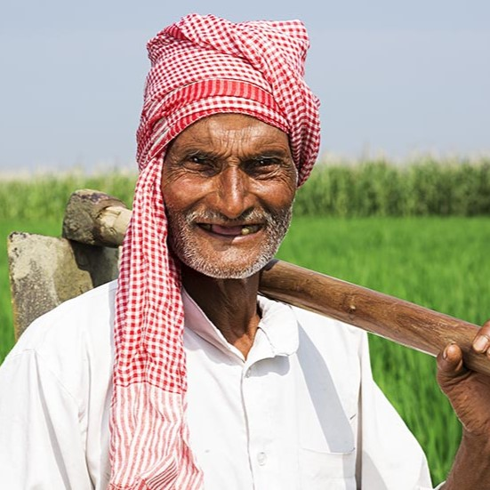
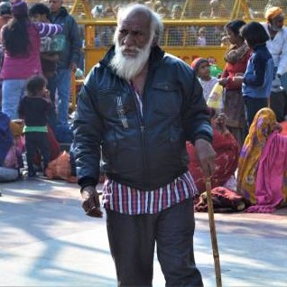
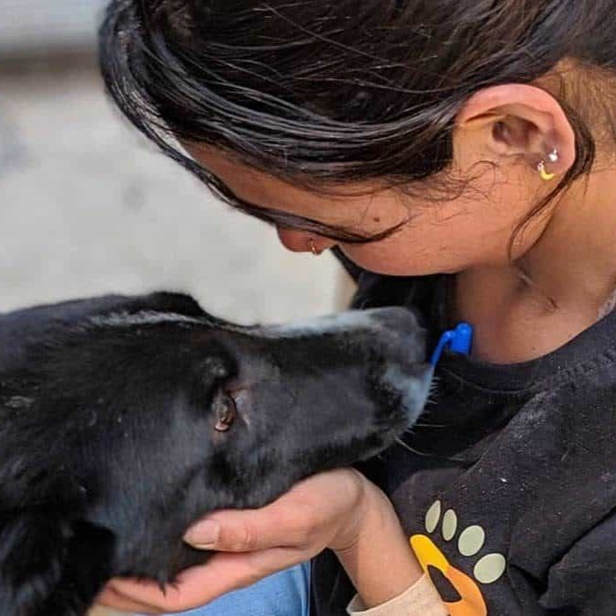
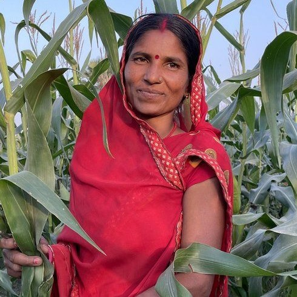
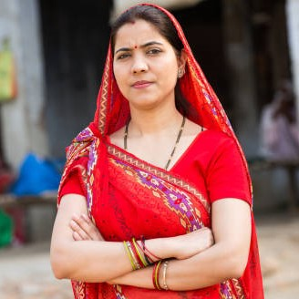
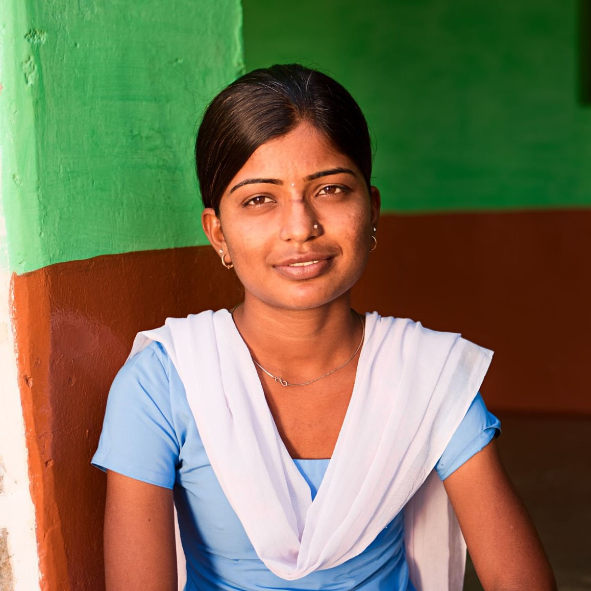

Ravi, a struggling farmer, received seeds, fertilizers, and food through Helping Hands. With this support, he replanted his crops and was able to feed his family and send his kids to school.

"My children's future is brighter now, thanks to your generosity," says Ravi.
Kumar, a homeless man in Mumbai, received warm clothes donated through Helping Hands during the harsh winter. This simple gesture helped him regain dignity and land a job at a local store.

"I have a job now, and I'm starting a new chapter in my life," says Kumar.
When floods hit Kerala, Helping Hands collected food for stray animals. Rani, a volunteer, fed over 1,000 strays and helped save a malnourished dog, Milo, who was later adopted.

"Seeing Milo healthy again made all the hard work worth it," says Rani.
Meera, a single mother in Pune, received financial aid through Helping Hands, allowing her to pay bills, buy food, and enroll her children in school.

"Your support gave me hope and the chance to rebuild my life," says Meera.
Thanks to donations, a water filtration system was built in the village of Hoshangabad, providing clean water to 500 families.

"This has changed our lives. No more sickness from contaminated water," says Asha, a village resident.
Rani, a young girl from Jaipur, received a scholarship and school supplies through Helping Hands, allowing her to attend school and pursue her dream of becoming a doctor.

"Education is the key to my future, and I'm grateful for the chance," says Rani.